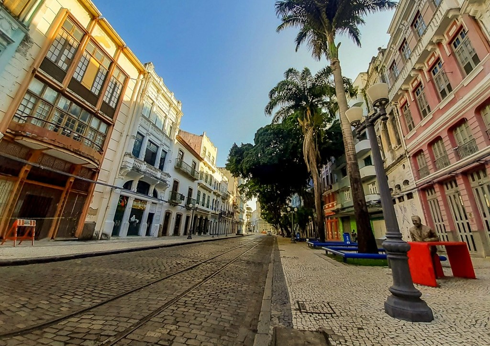

Seja bem vindo ao estado do Pernambuco
Pernambuco é um estado vibrante localizado na região Nordeste do Brasil, conhecido por sua rica cultura, história e belezas naturais. A capital, Recife, é uma cidade cheia de energia, com um centro histórico encantador chamado Recife Antigo, onde você encontra igrejas antigas, museus, pontes e uma vida cultural muito ativa. Recife também é famosa por suas praias urbanas, como Boa Viagem, que atrai moradores e turistas em busca de sol e mar. Além de Recife, o estado possui outras cidades importantes, como Olinda, que é Patrimônio Mundial da UNESCO, famosa por seu centro histórico colonial, ladeiras de paralelepípedos, igrejas barrocas e festas tradicionais, como o Carnaval de Olinda, conhecido por suas cores, música e dança. Pernambuco é também o berço do frevo e do maracatu, estilos musicais que fazem parte da identidade cultural do estado. A culinária pernambucana é deliciosa, com pratos como a tapioca, o bolo de rolo, a caldeirada de peixe e o famoso carne de sol com macaxeira. Além disso, o estado possui uma natureza exuberante, com áreas de manguezais, rios e praias paradisíacas, como a Praia de Porto de Galinhas, considerada uma das mais bonitas do Brasil. Pernambuco é um lugar cheio de história, cultura, alegria e belezas naturais que encantam quem visita. Se quiser saber mais, estou aqui para ajudar!

voltar